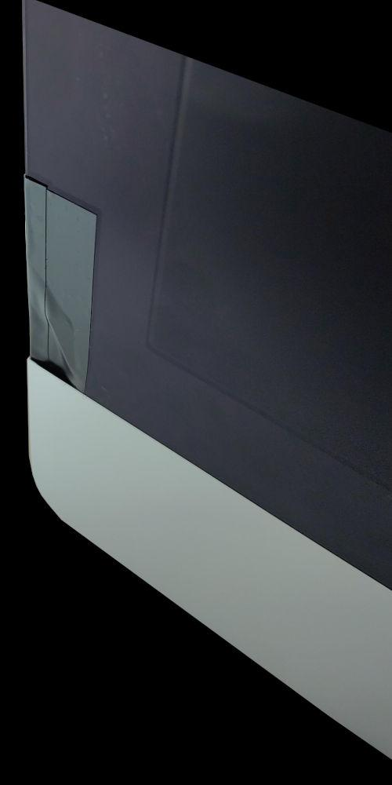

The iMac project (If you want to know the NVIDIA part scroll down to "Installing Linux and using modern Proton"). This was one hell of a ride. I will tell the story how I got it, why it is special, the painful process of upgrading it and how to run MODERN proton versions with the old Nvidia 470 Driver (and a rant on, what in my opinion is, plant obsolescence).
I hate Apple. I mean it. I hate them. From what I do and what I stand behind, it was obvious that I really don't like them without even saying it. But I don't say not to old hardware. In my family someone wanted to get rid of old Apple hardware and somehow over family members I got the hardware as a gift. The best part was I only had a very bury image of the iMac to work with. I did not know anything except that it is giant and looks newer then 2012. I also got a G4 but I don't know what to do with a perfectly working G4 egg looking thing.
Why am I writing this this way LOL. IDK. Anyways... as soon as I got it I checked the specs and was blown away. I was expected a low to mid range model but no, it was a maxed out one. LITERALLY everything was maxed out!
Not much to upgrade. So I ordered what could still be Upgraded:
First thing I did was upgrading the OS to the newest possible. This IS needed because of a BIOS update that implements NVMe support. New latest (and probably last) version is macOS Catalina 10.15.7. From what I read it needs to be at least High Sierra.
Tearing it down was terrible. The powersupply is fully exposed and must be handled relatively hard to get some connectors disconnected. This is f*cking dangerous and I can not see how a company can approve putting there workers and customers that want to own their hardware at so much risk. Then the glass. It is extremely thin. If you put the glass back late and you hit one of the corner even slightly or rub it against the aluminum it WILL break. I broke a small corner peace off my glass. It is LUCKILY very small, nothing else got damaged and the rest of the glass is still perfect so I "fixed" it by carefully adding tape to seal it and marker to make the bottom part not look exposed. Looks okay. Something you don't notice at all. Still mad about the design. In the past it was magnets.... now glue and a big middle finger.
The CPU cleaning (I cleaned everything) was hell. To get it out you must angle the head sink. After that you must pull it out and clean it. Putting it back in means you will put in the CPU, put the cooler on top and then have to press the board and cooler together else they come apart and destroying the socket. (I think) this design can't be by accident. (I think) this is intentional to make upgrading and rearing harder.
Installing the NVMe was easy with the random adapter I ordered. It is just a short peace between the NVMe SSD and the slot.
Putting it back together is the same amount of terrible but at least not worst. I highly recommend after you fixed the mainboard with one screw or two, to plug in multiple USB devices and an Ethernet cable at the back. This will make sure the mainboard is aligned with the port holes (being able to have such tight tolerances and design, but still leaving play in the mounts is beyond me) The OWC adapter did not work at the beginning. After unplugging and re-plugging all connectors of the adapter and the connections to the parts (SSD and SATA/Power cable) it worked. I needed to take the screw posts of the old HDD and put it on an adapter, that holds the SSD.
The best part is you will probably have to remove and add the glass 3 times: Remove it, do the upgrades/cleaning the PC, add it and stick it down for testing, remove it again to fix the issue's you will 100% have, re-adding it and test it again, remove it AGAIN, clean both sides of the glue areas, put on the glue strips and glue it down and hoping you did not miss anything or did connect the display correctly. In all that tine the bottom part of the glass can break easier then a cookie. Also: Make sure to not forget anything. The glue is one time only and most replacement glue is very strong from what I read.
MacOS is a dead end, You can mod a newer version onto it but it is still a dead end because of ARM. Windows would be the OS that can run the most software because not too many programs use cutting edge Vulkan implementations (YET). Linux runs the best but you will have to use either the Nouveau driver that is still far from good in my opinion. Or you install the Nvidia driver 470 (G05) or to be more precise the “470.256.02-74.2”. The most up to date proprietary garbage that still support's the card. This is the perfect argument why not to by Hardware that can not be used officially with OpenSource. You get hardware perfectly capable of running modern software but the manufacturer decided (In my opinion) to create E-Waste because money. This driver dose NOT support the newest (newer then 2023) Vulkan specs (BECAUSE OF THE DRIVER) and that limits you to DXVK 1.10.3 or vkd3d 2.6. This limits the amount of Games and software that can run. A lot (and it will be more in the future as games and software start using newer Vulkan implementations) will not run. But you can use the newest releases of Wine and Proton (FOR NOW) and replace the DXVK and vkd3d with the newest supported version. This can be annoying and some games won't work but it is the best we have for now. "Grimba" over at "computerbase.de" forum part made a script that can do that automated for all installed proton versions in Steam on the main drive: https://www.computerbase.de/forum/threads/shell-script-fuer-steam-nvidia-grafikkarten-aelter-als-turing.2195317/.
For the OS I would recommend either you know how to RELIABLY set up a Snapshot file-system or use a distribution that has it. OpenSuse for example. It also still ships the G05 driver in their Nvidia Repository (FOR NOW. G04 TOO LOL). Snapshots are important because the driver is old, needs patching from time to time in the DKMS module to be able to run and WILL break on you from time to time. This means having a way to save yourself in a pinch is important. I just installed OpenSuse Tumbelweed and the installed the Nvidia driver the official way recommended by OpenSuse: https://en.opensuse.org/SDB:NVIDIA_drivers.
The driver is also still shipped in Linux Mint, Arch with the AUR (maybe he best options because it can use the LTS kernel there, this dose not work on OpenSuse currently). LTS kernels would need less patching but they not always are implemented in a way that the Nvidia driver can work out of the box with it on some distributions like OpenSuse.
Now I have a relatively strong PC if I need one (last weekend would have needed one). But the jank and all the Apple bullshit makes it hard to recommend. I would have never started this project if it wasn't a gift. The PC is still strong for many task's today and would be even better with modern drivers but well, you know how Torvalds used to say "Nvidia, fuck you". I will not complain about a free PC and a few hours of work to make it great but it showed me again to why I got so strict about repairability and OpenSource. People think that it is overreacting, until the support of something they like/need/want gets doped and they are left with unrepairable, software f*cked e-waste.
I also tested RE//POSSESSED, my game in development, and it COULD run well enogth but the missing/bad/old implementation of Vulkan makes it not work all that great. I rely heavily on shader and environment code that is only supported in the “Forward+” mode in Godot aka. Vulkan. The editor and other DEV tools like Blockbench runs very well. Full blame is on the driver.
I liked everything useful and any information I found and/or used below. Also: I would recommend installing a fan management tool like "mbpfan” or similar because the fans only turn on ate 95°C. And people are wondering why Apple PC's have the phenomenon of dead GPU or VRAM more often... .
One other thing I noticed while testing is KDE (the default on OpenSuse) is a little unstable with NVIDIA (Or more likely Nvidia is more unstable because of KDE). It crashes KWin ("Desktop effects were restarted due to a graphics reset."). But KDE run's good enough. I would recommend installing an X11 desktop. I tested successfully "Enlightment" of all Desktops. It runs very well and no crashes so far. Sadly, installed on KDE OpenSuse, the Services don't work. XFCE works but has stutter issues in Games. LXQT dose not work (It comes with Openbox and it is very broken). Wayland modes and Desktops do not work at all or barley. KDE is not working except for season windows. To use Wayland on the old 470 driver use the Kernel-Parameter: "nvidia-drm.modeset=1".
UPDATE 2025.04.27:It came to my attention that NVK exists and wants to support Kepler (aka. the NVIDIA GTX 7XX series). That's nice. Popper good OpenSource drivers for the future is absolutely great! But reading through the news and blog entry's I found that Kepler will never support Vulkan 1.3. Something, something hardware support for something called "vulkanMemoryModel". Meaning it will be forever stuck on 1.2. Nothing changes in regards to gaming, that means. This sucks. Could it be emulated in software? Maybe, I don't know anything about that kind of stuff but I would be surprised if not. But lets face it. The GPU will still be great for everything EXCEPT Gaming in any direction that involves Vulkan. Could it have been added in firmware updates by Nvidia? IDK. I wasted enough time and energy with this LOL.
About X11/x-org: I started using Linux right around the start of Wayland taking over. I NEVER had any good experiences with X11. If something worked and never was something to think about, X11 was right there to sh*t the bed next to Wayland. Maybe it was because I had Nvidia GPU's for the beginning of my PC building time but it always had Issues. Wayland is not perfect either. XDG caused me so SO many headaches over the years, but most of the time it was something still in Alpha or I set it up wrong. Now I am using KDE with Wayland on AMD it it literally just works. KDE still has the (joke) patented KDE-Jank with stutters, weird theme issues, caching bullsh*t and so on but most of the time it just works and, with arrow snapping the windows, it is nearly as usable as a tilling environment, not as good mind you, but still very usable. OpenSuse with there KDE environment out of the Box is always a nice experience to be had every so often LOL.
I think it is clear I'm not thrilled using X11 on the iMac but this will change with NVK some day in the future. And I also know and can see, the GTX 780M with 4GB of VRAM is very old (around 12 years), but I am still mad about the modern issues with it, because it is still so capable (while being very inefficient while doing so LOL). And as I wrote above, Windows on the iMac WILL give you the most support in regards to modern games and software, but the Vulkan issue will only grow every single release. No to mention that at some point CPU instructions will also be missing with the 4th Gen Intel CPU. Old and still capable (thanks to slow progress over the years in hardware speeds) dose not mean compatable.
I tested sunshine as a "Monitor Mode" for the iMac. With all things disabled that induce latency in the NVIDIA-Settings (The Pipeline stuff) and in Moonlight V-Sync disabled it works well as a monitor. A little annoying to set up and it needs to execute a script on startup so the iMac connect automatically (and shutdown on disconnect). Everything is written. The only issue is that you either need to use a Desktop made for this or you need to turn off all Power Saving settings, make the power button turn the screen off and have no password on the account or anywhere else. You also need to disable power-saving and button passthrough in moonlight. A setup made for that is a way to do it (because KDE would be wasteful in regards to power and also bugs out if you turn the iMac screen of and on in Remote) but I will not be doing that. If you really want this use the scripts. I also added an extend function to my Sunshine Headless script, to see it check the post about "Sunshine Headless" to understand how it works and what to change for your setup: /2025.03.21_Sunshine_Remote_Headless_Hyprland/Sunshine_Remote_Headless_Hyprland.html.
The Damage (Looks worst in the photo then it actually is):
